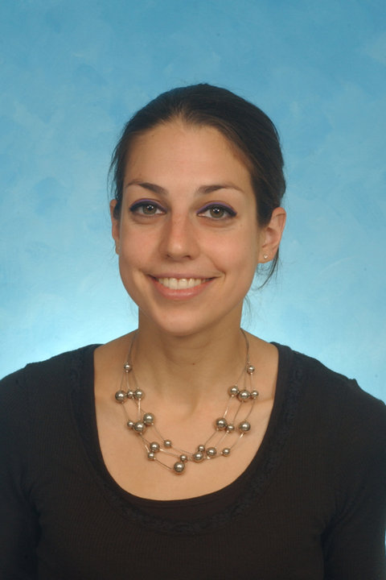
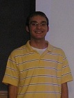
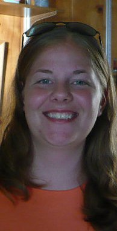
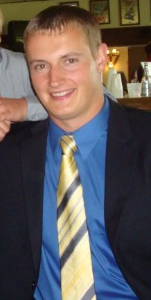
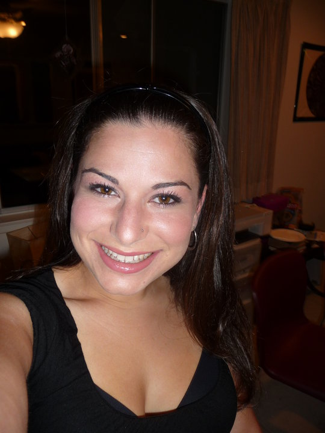

The REU program at WPI creates lasting relationships between its
participants. After spending an intense 8 weeks living and working together,
they become almost like a family. We at WPI are proud of all of our family
members and would like to give you a glimpse of their work and accomplishments.
If you have any questions or need advice you can contact
us by email.
Ane Coughlin
- 1999: Graduated from Bates College with B.S. in mathematics
- 2001: Graduated from Boston College with M.S. in mathematics
- Currently teaching math in Braintree High School, Braintree MA
Kristin Duncan
- May 1999: graduated from University of Dayton with B.S. in mathematics
- Summer 2000: won ASA Student Paper Competition
- June 2001: graduated from Ohio State University with M.S. in statistics
- Summer 2001, 2002: REU assistant for biostatistics at Ohio State
University
- August 2002: married
- Currently working on Ph.D. in statistics at Ohio State University
Ellen Phifer
- Completed M.S. in Applied Math at U. of Delaware
- Now working in defense industry
Jonathan Van Haste
- 1999: graduated from Calvin College with a B.S. in mathematics
- 2001: graduated from Mont Clair University with M.S. in statistics
- Currently works at AC Nilson, a market research firm
Brian Ball
- Summer 1999: REU Assistant
- May 2001: graduated from WPI in Mathematics and Physics
- Currently pursuing graduate studies at North Carolina State University in
Computational and Applied Mathematics
- Adopted a dog named Zoe
Chris Shane
- May 2000: graduated from Kansas State University with B.S. in Mathematics
- December 2002: graduated from Kansas State University with M.S. in
Mathematics
- Currently Actuary for Lafayette Life Insurance, Indiana
Sarah Winnie
- 2000: graduated from Hamilton College with B.A in Mathematics
- 2002: graduated from University of East Anglia (England) with M.Sc. in
environmental sciences (math modeling concentration)
Brooke Andersen, REU 2000
- January 2001: presented at AMS/MAA Joint Mathematics Meeting in New
Orleans
- Summer 2001: attended summer institute at Carnegie Mellon University
- 2002: graduated from Centre College in Mathematics
- Currently teaching math at Lexington High School, Lexington MA
Michael Escovitz, REU 2000
Ed De Guzman, REU 2000
- Summer 2001: participated in Computer Science REU at UMass-Amherst while
doing research for the Center for Intelligent Information Retrieval
- 2001-2002: was undergraduate researcher for the Vision, Interaction,
Language, Logic, and Graphics Environment (VILLAGE) Research Group
- May 2002: completed a senior honors thesis in Computer Science and
graduated from Rutgers University with a BS in Computer Science and a BA in
Mathematics
- Currently is a Ph.D. student in the Department of Computer Science at the
University of California-Berkeley
Barb Hess (Bennie), REU 2000
- January 2001: presented at AMS/MAA Joint Mathematics Meeting in New
Orleans
- February 2001: participated in COMAP math modeling competition with
outstanding rating
- May 2001: graduated from Bethel College
- Fall 2001: began graduate studies in Statistics at University of Minnesota
Garth Johnson, REU 2000
- 2000-2001: research at University of Central Arkansas was presented at MAA,
Arkansas Academic of Sciences and Arkansas Space Grant Consortium
conferences
- 2002: graduated
- 2001: attended joint conference in San Diego and presented his
undergraduate thesis: "Exact Solutions to the Variable Speed Wave
Equations Through Darboux Transformations"
Jon Kennedy, REU 1998 & REU 2000
- May 2000: graduated from WPI in physics
- Summer 2000: REU assistant at WPI
- January 2002: graduated from Boston University with M.A in Physics
- August 2002: began working on his PhD in Applied Math at WPI
Wendy Kooiman, REU 2000
- December 2000: graduated from Grand Valley State University in math
- May 2003: Graduated from Rensselaer Polytechnic Institute with M.S degree in
Operations Research and Statistics
- January 2001: Working at Smiths Industries Aerospace in Kentwood, MI as an
Integrated Navigation Systems Engineer
- January 2004: Began studying for M.Eng Electrical Engineering at
Western Michigan University in Kalamazoo, MI
Doug Mitarotonda, REU 2000
- Fall 2000: research work on solar power lights in Nepal
- January 2001: presented at AMS/MAA Joint Mathematics Meeting in New
Orleans
- Summer 2001: working for CIA in Washington, D.C.
- May 2002: graduated from Cornell University in Computer Science,
Mathematics, and Asian Studies
- Fall 2002: attending Cornell University for Master of Engineering in
Computer Science
- Summer 2002: worked at MIT Lincoln lab
Sandor Swartz, REU 2000
- Summer 2001: participating in research at U. of Missouri-Rolla
- December 2001: graduated from U. of Missouri-Rolla
Katie Tranbarger, REU 2000
- June 2001: graduated from California Polytechnic State University in
statistics
- Fall 2001: began Ph.D. in statistics at UCLA
- Dec. 2002: graduated from UCLA with M.S in statistics
Rebecca Wasyk, REU 2000
- December 2000: graduated from James Madison University in Mathematics
- January 2001: presented at AMS/MAA Joint Math Meeting in New
Orleans
- Summer 2001: REU assistant at WPI
- Fall 2001: began graduate studies at Brandeis University
- Fall 2003: began Ph.D. studies in Applied Mathematics at WPI
Blythe Ashcraft, REU 2001
- May 2002: graduated from Centre College, Danville, KY, with a B.S. in
mathematics
- January 2002: presented at AMS/MAA Joint Mathematics Meeting in San Diego
- Fall 2002: began working toward a Ph.D. in Physical Chemistry from Wake
Forest University of Winston-Salem, NC
Katherine Kline, REU 2001
- May 2002: graduated from Bryn Mawr College in Mathematics
- Fall 2002: began graduate studies in Systems Science and Mathematics at
Washington University, St. Louis, MO
Ivan Ramler, REU 2001
- January 2002: presented at AMS/MAA Joint Mathematics Meeting in San Diego
with Thomas Wakefield - won award
- May 2002: graduated from University of Minnesota-Morris in Mathematics and
Statistics
- Summer 2002: REU assistant at WPI
- Fall 2002: began graduate studies in Statistics at Iowa State University
Erin Renk, REU 2001
- May 2002: graduated summa cum laude with departmental honors in economics and mathematics (B.Sc.) from the University of Pittsburgh
- Fall 2002: began work as a civilian Operations Research Analyst at the Naval Air Systems Command.
Jennica Sherwood, REU 2001
- December 2002: graduated magna cum laude with a degree in mathematics from
the University of San Francisco
- May 2003: Participant in the 2003 Program for Women in Mathematics in Mathematical Biology, Institute for Advanced Study & Princeton University
- Fall 2003: began Ph.D. program in Neuroscience at Vanderbilt University Brain Institute
Thomas Wakefield, REU 2001
- May 2002: graduated from Youngstown State Unversity in Mathematics and
Economics
- January 2002: presented at AMS/MAA Joint Mathematics Meeting in San Diego
with Ivan Ramler - won award
- Fall 2002: began Ph.D. studies in Mathematics at Kent State University
Andrew Jalil, REU 2002
- 2004: graduating from Brown University with B.S in Mathematics and
Economics
Alex Lenkoski, REU 2002
- Graduate Student in Statistics at University of Washington
Borislav Mezhericher, REU 2002
- 2003: graduating from Queens College with B.A in Mathematics
- January 2003: presented his REU project at the AMS meeting in Baltimore - won award
- graduated from Columbia University in 2008 with a Ph.D. in computational number theory
- quantitative researcher at Citadel (a financial firm in Chicago) since graduation
Sonja Petrovic, REU 2002
- Ph.D. student in Algebra & Number Theory at Univ. of Kentucky
Ravi Srinivasan, REU 2002
- Grad student in Applied Math at Brown University
David Stoltzfus, REU 2002
- 2003: graduating with a B.S in Mathematics from Asbury College
- 2006: Graduated with M.S in Applied Mathematics from WPI
Patricia Tong, REU 2002
- 2004: graduating from NYU with a B.S in Mathematics and Economics
Matthew Willyard, REU 2002
- 2003: will graduate from the University of Rochester
- January 2003: presented his REU project at the AMS meeting in Baltimore - won award
- Graduate student, Dept. of Mathematics, Florida State University
Amy Cohen, REU 2003
- January 2004: co-presented at AMS/MAA Joint Mathematics Meeting in Phoenix, AZ
- May 2004: graduated from the University of New Hampshire with a B.S. in Mathematics
- June 2004: began work as an Actuarial Assistant at Liberty Mutual in Boston
Michael Coleman, REU 2003
- January 2004: co-presented at AMS/MAA Joint Mathematics Meeting in Phoenix, AZ - won award
- May 2004: graduated from Boston University with a B.A. in Mathematics and a minor in Astrophysics
- Graduate student, Dept. of Mathematics, George Washington University
Adam Czernikowski, REU 2003
- May 2004: graduated from Oberlin College with a B.Sc. in Mathematics
- Graduate student in Industrial Engineering at University of Florida
Heather Griffin, REU 2003
- May 2004: graduated from the University of Arkansas with a B.S. in Mathematics and a B.S. in Physics
- Spring 2004: got married!
Mary Gruber, REU 2003
- January 2004: co-presented at AMS/MAA Joint Mathematics Meeting in Phoenix, AZ
- May 2004: graduated from Capital University
- Fall 2004: will attend Michigan State University to pursue
a Master's degree in Industrial Mathematics
Erin Haller, REU 2003
- January 2004:
co-presented at AMS/MAA Joint Mathematics Meeting in Phoenix, AZ
- won award
- May 2004: graduated from the University of Missouri-Rolla
- Graduate Student in Math at University of Arkansas, Fayetteville

Jessica Jajosky, REU 2003
- Completed medical school at WVU
- Is currently an internal medicine resident at WVU
- Looking to switch to an anesthesia residency, also at WVU
Christopher Kim, REU 2003
- January 2004:
co-presented at AMS/MAA Joint Mathematics Meeting in Phoenix, AZ
- won award
- May 2004: graduated from Cornell University with a B.S. in Mechanical
Engineering and a B.A. in Mathematics
- Fall 2004: will begin Ph.D. studies in Computational Neuroscience
at the University of Chicago
Megan McKinney, REU 2003
- January 2004:
co-presented at AMS/MAA Joint Mathematics Meeting in Phoenix, AZ
- May 2004: graduated from Slippery Rock University with a B.S. in
Mathematics concentrating in Actuarial Mathematics, and a minors in
Statistics and Economics
- Works at University of Pittsburgh Medical Center
Trinh Pham, REU 2003
- May 2004: graduated from Mills College
- Fall 2004: will attend UC Berkeley to pursue
a Master's degree in Statistics
- Assistant Professor of Pharmacy Practice, Yale-New Haven Hospital, New Haven, CT
Sid Rupani, REU 2003
- January 2004:
co-presented at AMS/MAA Joint Mathematics Meeting in Phoenix, AZ
- won award
- May 2004: graduated from WPI with a B.S. in Mechanical Engineering
- Fall 2004: will pursue an MS in Mechanical
Engineering at WPI
- Ph.D. Student in Engineering Systems at MIT
Erica Johnson, REU 2004
- Grad. Student in Math at Univ. of New Hampshire
Andrew Magyar, REU 2004
- Ph.D. student in Biostatistics at Rutgers University.
Kimberly Millard, REU 2004
- Graduate Student in Math at Florida State University
Jessica Scheld, REU 2004
- Graduater Student in Math at Uniersity of Vermont
Brian Skjerven, REU 2004
- May 2005 - Graduated from St. Mary's University of Minnesota, B.A. Mathematics
- July 2006 - Married
- June 2006-August 2007 - IBM intern in Cambridge
- May 2007 - Graduated from WPI, M.S. Applied Mathematics
- Currently - pursuing a Ph.D. in Scientific Computation at the University of Minnesota
Nathanial Burch, REU 2005
- Spring of 2006: Got his B.S. degree in Mathematics from Grand Valley State University
- Graduate Student in Math at Colorado State University
- Plans on finishing up his M.S. in the spring of 2008 and staying at Colorado State University for his Ph.D.
- Research interests include areas involving differential equations, numerical analysis,
and probability. Currently working on a modeling project related to wireless ad
hoc networks.
Sarah Hartenstein, REU 2005
- Undergraduate student at Carroll College
Razvan Ionescu, REU 2005
- Summer 2006: 4 months internship at New Reinsurance Company Geneva (Switzerland),
worked on exposure curves (a pricing method) applied on the non-life contracts
- Spring 2007: Graduaded from ISFA (Institut de Sciences Financières et Assurances)
(Institute for Financial Science and Insurance) University Claude Bernard Lyon France
in actuarial math
- Summer 2007: 6 months internship at SCOR Global Life (Paris France) (SCOR
is the biggest Life Reinsurer in France, number 7 in the world), working on
disability pensions.
Alex Mills, REU 2005
- Undergraduate student at College William and Mary
Christopher Mirabito, REU 2005
- Graduate Student in Math at Univ. of Texas at Austin
Eugene Quan, REU 2005
- May 2007: Graduated from Harvey Mudd in May
- July 2007: Moved to Chicago to work at Citadel Investment Group.
Wendy Chen, REU 2006
Rachel Danson, REU 2006
Dena Feldman, REU 2006
Erin Kiley, REU 2006
Mary Korch, REU 2006
Daniel Lawver, REU 2006
Jason Miller, REU 2006
- May 2007 - Graduated magna cum laude from Marist College with B.S. in Applied Mathematics
- Currently - Pursuing PhD in Mathematics at Tulane University, working on numerical methods for solving hyperbolic conservation laws
Jody Mullis, REU 2006
Melissa Moon, REU 2006
- May 2007: Graduated from Pacific Lutheran University with degrees in mathematics and physics
- June 2007-current: Working as an actuary for Milliman, Inc. in the healthcare practice area
- February 2009: Married husband, Danny
Alla Shved, REU 2006
Lingfeng Tang, REU 2006
- Was Assistant Director at Moody's Analytics, making software for structured finance transparency
- Is currently looking to either change careers or go to grad school

Daniel Smaltz, REU Assistant 2006
Jonathan Adler, REU 2007
Matthew Bader, REU 2007
- Started Venatic Outdoors, an outdoor video production company, in Fall 2009
- Currently works for Paychex Inc. in the Credit Risk department
- Has almost completed his MS in Banking and Finance at Boston University online
- Got married on July 24th
Paul Bernhardt, REU 2007
Naomi Brownstein, REU 2007
- Currently pursuing a doctorate in Biostatistics at UNC Chapel Hill under an NSF graduate research fellowship.

Jaye Bupp, REU 2007
- Graduated from Alma College in 2008 with B.S. in Mathematics and a B.A. in Music
- Received M.S. in Applied Statistics from Purdue University-Indianapolis in May 2010
- Is currently job searching
Patrick Crutcher, REU 2007
Morgan Gieseke, REU 2007
Yu-Jay Huoh, REU 2007
Nathan Langholz, REU 2007
Sean Skwerer, REU 2007
- Currently a graduate student at UNC-CH department of statistics and operations research
- Is doing research in optimization and shape statistics, whose main applications are brain image analysis and phylogenetic trees
Christopher Steiner, REU 2007
- Completed Masters Degree in Economics
- Currently pursuing Ph.D. in Economics at UC San Diego
- Interested in the applications of mathematics in economic modeling

Grant Weller, REU 2007
- May 2008 - Completed B.A. in Mathematics and Economics at Concordia College
- 2007 - Named to the d3football.com All-America football team in 2007
- August 2008 - started graduate school Department of Statistics at Colorado State University
- December 2010 - Will finish M.S. degree. Plans to continue for a Ph.D. in Statistics.
Gerardo Hernández, REU Assistant 2007

Sara Adler, REU 2008
- Spring 2009 - Received B.A. in mathematics and economics from Case Western Reserve University
- Currently persuing a Ph.D. in economics at UC Santa Barbara
- Research focus is in Environmental Economics, specifically water pollution and water allocation
Jennifer Boyko, REU 2008
- Spring 2009 - Earned B.S. in Mathematics from Haverford College
- Currently a Ph.D. student in the Statistics dept at University of Connecticut.
David B. Brown, REU 2008
David P. Brown, REU 2008
Stephanie Browne-Schlack, REU 2008
Pulak Goswami, REU 2008
Xiao Han, REU 2008
Evan Herring, REU 2008
- Currently pursuing an MS in Math Finance at NYU's Courant Institute
- After graduation, plans to work as a "quant" for a bank in New York
- Currently going for a biostats minor
- Working towards an honors thesis in biology
- Is applying to medical school
- Also enjoys writing website articles, stories, and translating
Laura Hou, REU 2008
Thomas Seaquist, REU 2008
Erin Vinnedge, REU 2008
Jian Wang, REU 2008
Heather Standring, REU Assistant 2008